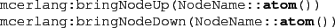

Next: Compiling Erlang code using Up: Extensions Previous: Node and Global Dictionaries Contents
New nodes are created automatically in McErlang; there is normally no need to explicitly create them. The @mcerlang:spawn(Fun::fun(),NodeName::atom())@ function, for instance, will create a (simulated) node with the name @NodeName@ if it doesn't already exist.
Nodes can also be explicitly started, and shutdown using
the functions:
